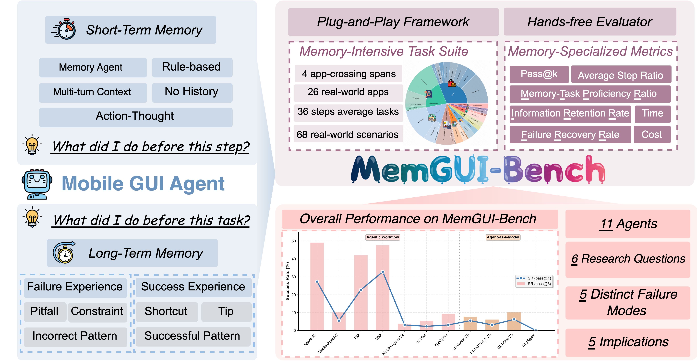
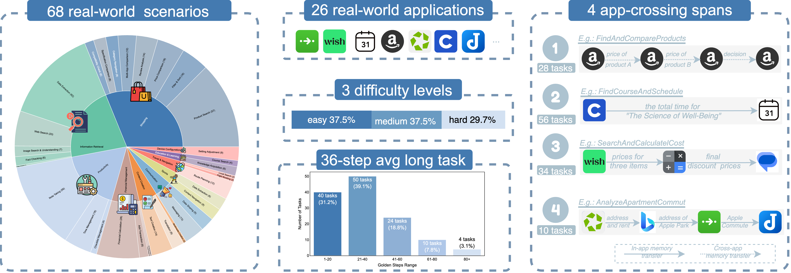
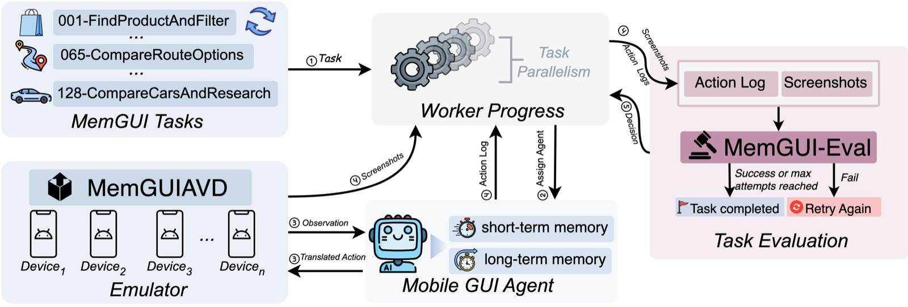

Current mobile GUI agent benchmarks systematically fail to assess memory capabilities, with only 5.2-11.8% memory-related tasks and no cross-session learning evaluation.
MemGUI-Bench introduces a comprehensive memory-centric benchmark with pass@k evaluation and staged LLM-as-judge evaluation, designed to rigorously test agents' ability to retain and utilize information across complex, multi-application workflows.
Systematic analysis of 11 agents across 5 architectures, identifying key memory mechanisms.
Cross-temporal and cross-spatial retention challenges across 26 real-world applications.
Automated Progressive Scrutiny pipeline with 7 hierarchical metrics for accurate evaluation.
Comprehensive assessment revealing 5 distinct failure modes and design implications.

First comprehensive benchmark for GUI agent memory evaluation.

68 scenarios, 26 apps, 3 difficulty levels.

Snapshot-based architecture with parallel execution.
Progressive Scrutiny Evaluation for Memory-Intensive GUI Tasks
Traditional evaluation methods face critical limitations: rigid rule-based matching cannot handle semantic variations, while "LLM-as-Judge" approaches overwhelm models with complete trajectories.
MemGUI-Eval introduces a novel "Progressive Scrutiny" pipeline that mimics efficient human expert verification, achieving 95.9% F1-score at only $0.031 per trajectory.

Four specialized agents: Triage Judge, Step Descriptor, Semantic Judge, and Visual Judge.
Comprehensive comparison across evaluation environment, pipeline, and agent support dimensions
| Benchmark | Evaluation Environment | Evaluation Pipeline | Agents Tested |
||||||
|---|---|---|---|---|---|---|---|---|---|
| Memory Tasks |
Cross-app Tasks |
Total Tasks |
3rd-party Apps |
Auto Reset |
Long-term Memory |
Auto Eval |
Memory Metrics |
||
| Rule-based Evaluation Pipeline | |||||||||
| AndroidArena | 22 | 22 | 221 | ✗ | ✗ | ✗ | ✗ | 1/4 | 1 |
| AndroidWorld | 6 | 6 | 116 | ✓ | ✓ | ✗ | ✗ | 1/1 | 3 |
| AndroidLab | 45 | 0 | 138 | ✓ | ✓ | ✗ | ✗ | 1/4 | 4 |
| LlamaTouch | 0 | 0 | 495 | ✓ | ✗ | ✗ | ✗ | 1/1 | 4 |
| B-MoCA | 0 | 0 | 60 | ✗ | ✗ | ✗ | ✗ | 1/1 | 3 |
| MobileAgentBench | 0 | 0 | 100 | ✗ | ✓ | ✗ | ✗ | 1/6 | 5 |
| LLM-as-a-Judge Evaluation Pipeline | |||||||||
| A3 | 9 | 0 | 201 | ✓ | ✗ | ✗ | ✓ | 1/2 | 6 |
| SPA-Bench | 40 | 40 | 340 | ✓ | ✗ | ✗ | ✗ | 1/7 | 11 |
| MemGUI-Bench (Ours) | 115 | 100 | 128 | ✓ | ✓ | ✓ | ✓ | 4/7 | 12 |
MemGUI-Bench is the first benchmark to systematically evaluate both short-term and long-term memory capabilities of Mobile GUI agents.
Comprehensive evaluation of 11 GUI agents reveals critical insights about memory capabilities. View full leaderboard →
@misc{liu2026memguibench,
title={MemGUI-Bench: Benchmarking Memory of Mobile GUI Agents in Dynamic Environments},
author={Guangyi Liu and Pengxiang Zhao and Yaozhen Liang and Qinyi Luo and Shunye Tang and Yuxiang Chai and Weifeng Lin and Han Xiao and WenHao Wang and Siheng Chen and Zhengxi Lu and Gao Wu and Hao Wang and Liang Liu and Yong Liu},
year={2026},
url={https://openreview.net/forum?id=7JT8yIPELM}
}